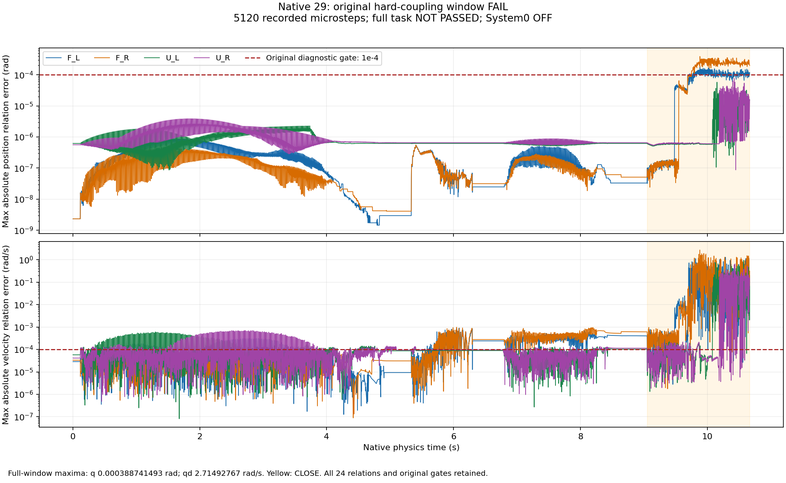
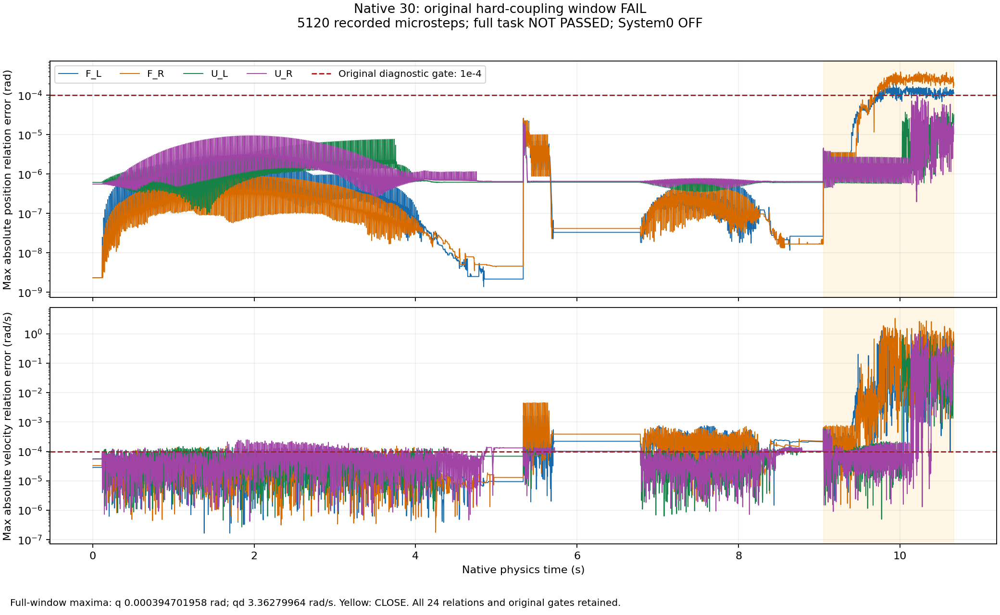
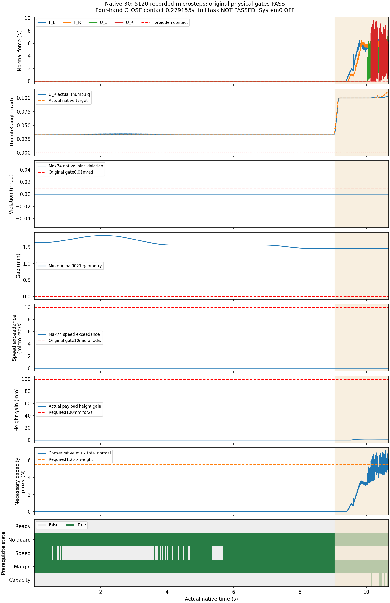

完整 System 0 安全验收未通过。本页封存到V30。System0与学习策略均关闭，正式独立留出为0。这些是同一个已知case23的自适应开发诊断，不能按独立随机样本计数。当前为2FR3/F2＋2UR5/DFX实验配置，标准2FR3＋2JAKA Zu7＋4RH56F2资产配置尚未推广。所有原门槛及失败保留。
V29将物理时间步缩至0.00208325秒，每个固定0.016666秒控制周期保留8个物理步，FIFO仍为6个控制周期。V30仅改变24个独立手指电机的控制器阻尼；质量、惯量、摩擦、碰撞几何、力矩上限和从动关节零PD均未改。两次均通过本窗口物理门槛，但原手指联动精度和完整任务失败，阻尼调整未被采用。V31速度迭代对照已另行注册，不作为本页结果。
每次640控制周期、5120物理步；每路161个真实采样帧。MP4解码时序最大误差1.78×10⁻¹⁵秒；VP9误差不超过0.000496秒。末帧显示停留不增加物理测试时间。三路视锥检查通过不等于无遮挡；全景中央夹持仍有机器人遮挡，完整可视网格与烘焙形状尚未验收。
| 版本 | 配置 | 控制/物理步 | 物理门槛 | 位置残差rad | 速度残差rad/s | 原联动门槛 |
|---|---|---|---|---|---|---|
| V23 | 原链 / TGS128/1 / 外力每次迭代关 | 640/1280 | 通过本窗口 | 0.00556869805 | 7.37386894 | 失败 |
| V25 | 等价根引用 / TGS128/1 / 关 | 596/1192 | 失败 | 0.00558625162 | 6.97538137 | 失败 |
| V26 | 等价根引用 / TGS128/1 / 开 | 640/1280 | 通过本窗口 | 0.00440229475 | 7.02417517 | 失败 |
| V27 | 原链 / TGS128/1 / 开 | 593/1186 | 失败 | 0.00564101338 | 7.21280384 | 失败 |
| V28 | 原链 / PGS128/1 / 关 | 640/1280 | 通过本窗口 | 0.0863169134 | 1.41678691 | 失败 |
| V29 | 同V26，物理时间步缩为1/4 | 640/5120 | 通过本窗口 | 0.000388741493 | 2.71492767 | 失败 |
| V30 | 同V29，仅24独立电机阻尼调整 | 640/5120 | 通过本窗口 | 0.000394701958 | 3.36279964 | 失败 |
位置和速度关系门槛均为1×10⁻⁴，全部24条原URDF关系逐物理步核对。参数差异审计通过只证明试验配置，没有证明模型通过；接触与反馈使实际轨迹不同，因此不据此声称收敛阶或独立因果结论。V25手梁峰值超过30N、V27速度超限，早停与完整已有窗口均保留。V24资源中止单列为未评分，未删除或算作成功。比较CSV · 比较数据 · 资源中止记录



完整任务必须达到100mm且稳定2秒的真实抬升，并完成搬运、放置、真实释放和全部撤离；当前两次短窗口没有这些成功阶段。物体仅按原生物理接触运动，没有运行时挂接或瞬移。负载容量代理只是必要条件，不能当作摩擦力矩闭合证明。
已有开发集合32,000个提案，经几何筛选963、原生前缀512、全部74关节合格263，再条件选128。手指起始状态仍固定，26臂关节的边际跨度或二维格占用不代表整个高维操作空间充分覆盖。这些筛选样本不能代替预先冻结机制后至少两批独立新种子、每方法每批128条且960控制周期的正式实验。必须加入24独立手指电机及全部48映射坐标、物体布局、摩擦、噪声、陈旧感知和故障，并验证选择性暂停、未受威胁手臂继续动作、恢复和完整协作成功。
9项要求全部同时通过才可验收。当前运动路径比例等有用性指标仍不足，完整学习System0同输入开关对照、标准资产推广和正式留出未完成。下面保留逐项缺口。
| 要求 | 状态 | 证据 | 待达标 |
|---|---|---|---|
| 回退保持在原始非零速度和延迟下持续安全 | DEVELOPMENT_LONG128_PASS_FORMAL_PENDING | 128条×480周期开发集保持通过；仍非有效操作，正式独立960周期未验收 | 独立冻结多种子与运行时未来安全/制动认证 |
| 保留操作意图并有实际四臂运动 | FAIL | v4安全123/128且四臂指令运动66/128；v5安全116/128且运动128/128。分层路径90%门槛仍失败 | 漏检碰撞和FIFO到达/未来保持；选择性暂停、恢复及任务完成 |
| 强随机、大范围操作空间与定向危害覆盖 | PARTIAL_CONDITIONAL_DEVELOPMENT | 初始26关节跨度平均96.159%、最窄74.625%；48手指起点固定；同一筛选128开发集，单条0.266656s | 随机手指与持续广范围动作、对象与布局/故障分层；边际跨度不等于26维可达覆盖 |
| 科学规范的冻结协议、独立多种子、留出与不确定性报告 | NOT_ACCEPTED | 当前全部为已知开发样本；正式独立留出验收0 | 候选修复后冻结至少两套独立新种子；保留所有失败，报告最坏种子 |
| 物体位置、姿态、大小、速度、可达性进入明确规划与安全输入 | FAIL | V29缩短时间步和V30仅调24电机阻尼均未通过原联动门槛；V30位置残差0.000394702rad，速度残差3.362800rad/s；原资产质量、惯量、几何及力矩上限未改 | 受载联动模型验收、真实感知故障、烘焙碰撞查询及标准资产配置推广 |
| 真实物理夹持、抬升、搬运、放置和释放 | FAIL | V30全部5120步物理门槛通过；四手连续接触0.279156秒；必要容量代理最高7.101351N但未同时满足速度和稳定条件；抬升准入0次，最大抬升0.585318mm | 模型先达标，再完成稳定摩擦夹持、100mm/2s抬升、搬运、放置、真实释放和撤离 |
| 真实四臂共同任务且有安全与不安全的同输入对照 | FAIL | 四手同梁真实摩擦记录完整；12秒CLOSE未满足抬升准备条件；System0与学习策略均关闭 | 完整协作成功及同输入System0开关配对 |
| 完整原生观测和独立危害判据，无漏测或单看画面 | PASS_RECORDED_BOUNDED_CASES_WITH_LIMITS | V29/V30每次全部5120物理步、74关节、9021几何、82刚体点接触和摩擦侧车均保留；时间步与24阻尼单项差异独立核对 | 实际烘焙全形状认证、真实视觉感知、延迟到达状态及负载预测界 |
| 网页可审阅的安全对照、完整视角和证据归档 | PARTIAL_SAFE_TASK_COMPARISON_NOT_ACCEPTED | V29与V30各四路161帧真实视频，完整MP4/VP9时序核对；243个关键视角样本通过源几何视锥检查 | 遮挡和完整可视网格验收、真实成功协作视频及同输入学习System0开关安全对照 |
V29全部5120步与四路视频索引 · V30全部5120步与四路视频索引 · 仅时间分辨率改变的原生审计 · 仅24个电机阻尼改变的原生审计 · 抬升未准入 · 完整9项验收矩阵
V29/V30完整74状态与目标、9021几何数组、82刚体所有点接触及物体摩擦侧车均公开；V23–28本页公开审计与模型参数，未宣称其全部原始物理侧车公开。阻尼估算：固定臂、源COM和对角近似的局限 · 碰撞查询前置条件缺陷：未取得活动烘焙形状证书 · 此前21.08秒完整失败试验及视频 · 运动有用性和随机开发证据
记录包含成功检查、失败、早停和资源中止。下一步先使受载模型达标，再完成真实夹持全任务；随后冻结策略和标准资产配置，执行足够宽的独立正式实验。